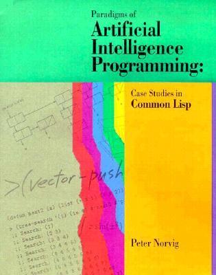

Paradigms of artificial intelligence programming: Case studies in Common Lisp

Peter Norvig. Paradigms of Artificial Intelligence Programming: Case Studies in Common Lisp. Morgan Kaufmann. 1992.
An absolute classic of both AI and Lisp, and really two books in one. The applications presented cover the entire range of “classic” AI up to the late 90s: expert systems, logic programming, symbolic mathematics, knowledge representation, constraint programming, game search, syntax-driven natural language processing, and more.
It uses Lisp as the programming vehicle, and doesn’t shy-away from depth, dealing with the effects of garbage collection (and how to program effectively in its presence), the effects of different representations, low-level optimisation and disassembly, and all the approaches one needs to use Lisp in real, scalable practice.